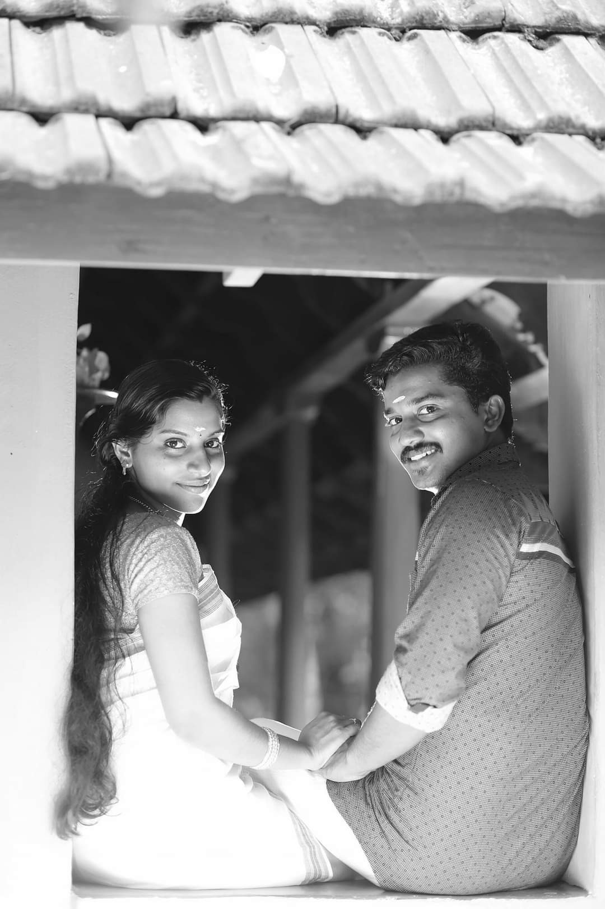

ഇച്ചിരി പഴഞ്ചനാണേലും ‘പെട്ടിക്കുഞ്ഞേ’ വിളി എനിക്ക് ഒരുപാടിഷ്ടമാണ്.
ഒരു നൊസ്റ്റാൾജിയയുടെ സുഗന്ധമുണ്ടതിന്.
അക്കിടീം മുയലും ശങ്കരനും പാറുവും പീയെസ്സും നീലിയുമടക്കം വളരെ കുറച്ചുപേർക്കുമാത്രം കൽപ്പിക്കപ്പെട്ട സ്വാതന്ത്ര്യം!
പരിഭവമേതുമില്ലാതെ സ്വീകരിക്കുന്ന ആ സ്നേഹത്തിനു കാരണം പത്തുകൊല്ലം മുമ്പത്തെ ഒരു വസന്തകാലമാണ് – school life !!!
“ഡീ നീലീ…”
“പെട്ടിക്കുഞ്ഞേ…”
ഇൻബോക്സിൽ വളരെ റെയറായി മാത്രം കാണാറുള്ള അവതാരം. (ശെരിക്കുള്ള പേര് ശ്രുതി എന്നോ മറ്റോ ആണെന്നു തോന്നുന്നു)
വരുമ്പോളൊക്കെ ഒരുകുന്നോളം ഓർമ്മകളും അയവിറക്കി നമ്മളെയങ്ങു വല്ലാണ്ടാക്കിക്കളയും.
പണ്ട് അമ്പലത്തീ കല്ല്യാണം നടക്കുന്നത് ക്ലാസ്സീ ഇരുന്നു നോക്കാണ്ടിരിക്കാൻ ദീപടീച്ചറ് കർട്ടൻ കൊണ്ടിട്ടത്…
നിലത്തുവീണ അട്ടാണിയൊക്കെ പെറുക്കിയെടുത്ത് കൊണ്ടുകൊടുത്ത് കൂട്ടുകാരെ പറ്റിച്ചത്…
എറിഞ്ഞുകളിച്ച ഡസ്റ്റർ തൊട്ടപ്പുറത്തെ ലാബിന്റെ മച്ചിൽപോയി ഒളിച്ചിരുന്നത്…
അങ്ങനെ ഒരുപാടൊരുപാട്!
പലപ്പോഴും ഞാൻ അതിശയിച്ചിട്ടുണ്ട്, ഈ കുഞ്ഞുകുഞ്ഞു കാര്യങ്ങളത്രയും ഇത്രവർഷങ്ങൾക്കിപ്പുറവും ഇവളിത്ര കൃത്യമായിതെങ്ങനെ ഓർത്തെടുക്കുന്നൂന്ന്.
(you are great Neeli)
“ഡാ, തീയതി നിശ്ചയിച്ചൂട്ടോ… ജൂലൈ 10”
“mmm, പീയെസ്സ് പറഞ്ഞാർന്നൂ”
മാസങ്ങൾക്കു മുമ്പാണ് ഒരു സൂചനപോലും ഇല്ലാതിരുന്ന ആ രഹസ്യപ്രണയത്തിന്റെ ഞെട്ടിക്കുന്ന വെളിപ്പെടുത്തൽ!
തുടക്കത്തിലേ “കൂടെ പഠിച്ച ഒരാളാ” ന്നവൾ പറഞ്ഞപ്പോളേ മനസ്സിലാദ്യം തെളിഞ്ഞത് മ്മടെ പീയെസ്സിന്റെ ചിരിക്കുന്ന മുഖമാണ്!
നീലിക്ക് പീയെസ്സ്!!! അതങ്ങനെയേ വരൂ.
(ചക്കിക്കൊത്ത ചങ്കരൻ, ഈനാംപേച്ചിക്ക് മരപ്പട്ടി കൂട്ട് എന്നൊക്കെ പഴമക്കാരു പറഞ്ഞുവെച്ചേക്കുന്നത് വെറുതെയാണോ)
എന്നാലും ഇതെപ്പോ ഒപ്പിച്ചൂ… അതിശയതെക്കാൾ കൂടുതൽ സന്തോഷമായിരുന്നു
പീയെസ്സേ, ഡാ കള്ള ബടുവാ…
വെറും പാവത്തൂങ്ങളായ എന്നേം സബീറിനേം ഒക്കെ പണ്ട് ഒരു കാര്യോം ഇല്ലാതെ എന്തോരം ഉപദ്രവിച്ചിട്ടുണ്ടെടാ നീ.. അന്നേ എനിക്കറിയാർന്നൂ, എന്നേലും നീ അതിനൊക്കെ അനുഭവിക്കൂന്ന്!
ദൈവോണ്ട്രാ!!!
പീയെസ്സിപ്പോ ആളാകെ മാറി, പഴേ തല്ലുകൊള്ളിത്തരോന്നൂല്ല.
നീലീ നീലീന്നുള്ള വിളിയൊക്കെ മാറ്റി ഇപ്പൊ മോളേ ദേവൂ എന്നൊക്കെ ആക്കീട്ടുണ്ട്! (സ്നേഹംകൊണ്ടാണോ അതോ പേടിച്ചിട്ടാണോ എന്തോ)
എനിക്കതല്ല, പണ്ട് പത്തീ പഠിക്കുമ്പോ ഉച്ചക്ക് ചോറുണ്ണണ സമയത്ത് പീയെസ്സ് വന്നു കയ്യിട്ടുവാരി കട്ടോണ്ട് പോവാണ്ടിരിക്കാൻ മുട്ടപൊരിച്ചത് ചോറിന്റെ അടീല് കുഴിച്ചിട്ടോണ്ട് വന്നിരുന്ന പെങ്കൊച്ചാ ഇനി അവനു കഞ്ഞിവെച്ചുകൊടുക്കാൻ പോണേല്ലോ എന്നോർക്കുമ്പോളാ!!!
നിങ്ങക്കുണ്ടാവുന്ന കൊച്ചിനെ (ആണാണേലും പെണ്ണാണേലും) ഞാൻ “ടെന്നീ” എന്നു വിളിക്കും!!! (10.E)
എന്തായാലും കലണ്ടറീ വട്ടമിട്ടു വെച്ചിട്ടുണ്ട്..
ഒരു വലിയ ഗെറ്റ് ടുഗദർ ഒക്കെയാണ് മനസ്സിൽ.
Marriage isn’t the climax. It should be the beginning of a real love story!
-DeOn-